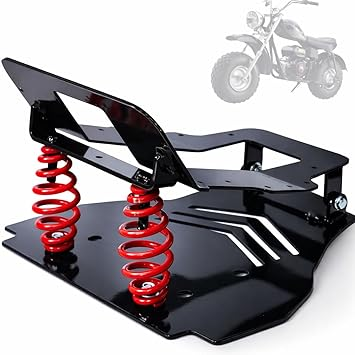
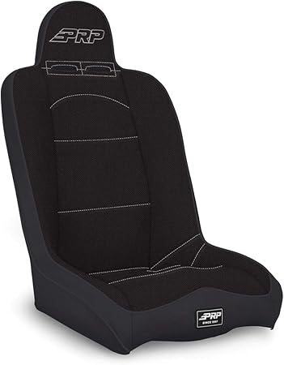

Sparco R100 — Great value
Sparco R100 — Great value
Corbeau Baja RS — Highly reviewed
PRP Seats Daily Driver — Highly reviewed Smittybilt XRC Seat — Highly reviewed
Smittybilt XRC Seat — Highly reviewedMay 2026
We've spent serious time comparing tacoseats. Some impressed us, some didn't, and a few genuinely surprised us.
Sparco R100 — Great value
Corbeau Baja RS — Highly reviewed
PRP Seats Daily Driver — Highly reviewedSmittybilt XRC Seat — Highly reviewedTrusting fake reviews — Look for reviews with photos and specific details. Generic praise is often planted.
Not measuring — "It looked bigger online" is the #1 return reason for tacoseats. Measure twice.
Blind brand loyalty — Your favorite brand might not make the best tacoseats. Stay open to better options.
Panic buying on sale days — Prime Day and Black Friday tacoseats deals aren't always real discounts. Check year-round pricing.
Our comparison tables on tacoseats.com break down options by price, features, and ratings. Start there.